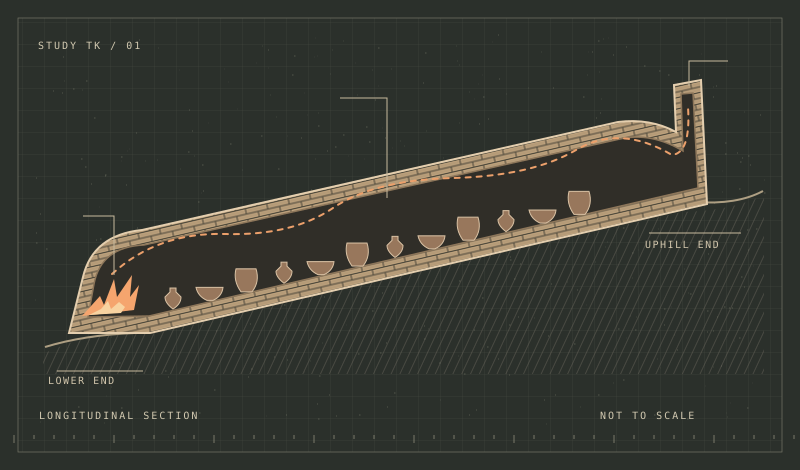
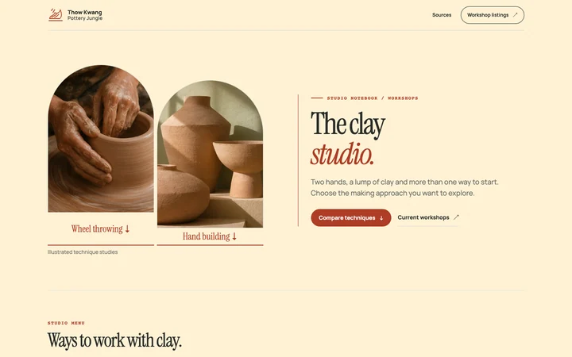
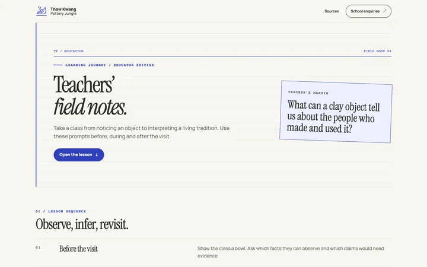
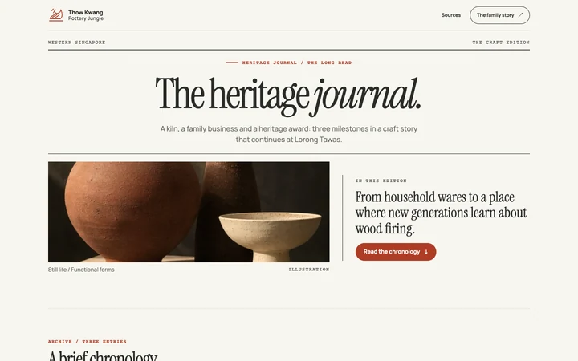
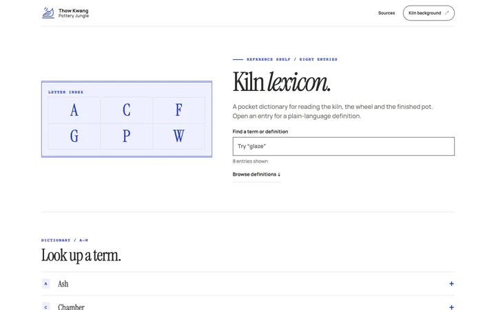
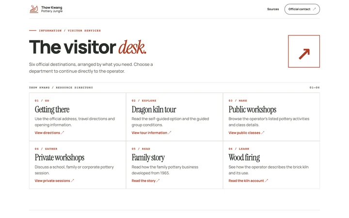

V1
Inside the Dragon Kiln
Trace heat through a cutaway of the dragon kiln and choose a self-guided visit, group tour or workshop.
Offline. Saved collections and demos are available. Connect to open a new demo or a full screenshot.
Heritage & Craft · Singapore
Explore the dragon kiln, studio workshops and the Tan family's pottery heritage at Lorong Tawas.
Official company website
Choose two designs from this collection.
Trace heat through a cutaway of the dragon kiln and choose a self-guided visit, group tour or workshop.

Compare the self-guided and group routes and find the official directions to 85 Lorong Tawas.

Match a wheel or hand-building interest to public or private pottery workshop information.

Prepare a school visit with an observation lesson, a class checklist and official school-group contacts.

Follow four wheel-forming gestures, then find the official beginner workshop listing.

Read how wood, flame and ash shape fired pottery and where to check official firing updates.


Use three child-led observation prompts and choose between a family visit and a hands-on workshop.

Build a group enquiry brief and compare heritage tours with private team or school workshops.

Read three sourced milestones in the history of Thow Kwang’s kiln, family business and heritage award.

Search eight plain-language pottery and kiln terms, with links back to the operator’s craft sources.

Compare three illustrated ceramic vessels and trace their rims, shoulders and feet.

Download a printable observation card and use three drawing prompts to study pottery on a visit.

Follow an unhurried self-guided observation itinerary, with official access and visit information.

Find the right official resource for directions, kiln tours, heritage reading or a pottery workshop.
Choose another style to explore more directions.
Version v1.4.0 · ba278cec19153b4e
Use your browser’s Install action. On iPhone or iPad, choose Share → Add to Home Screen. The gallery saves collections and thumbnails. Open a demo online to prepare its own offline files.